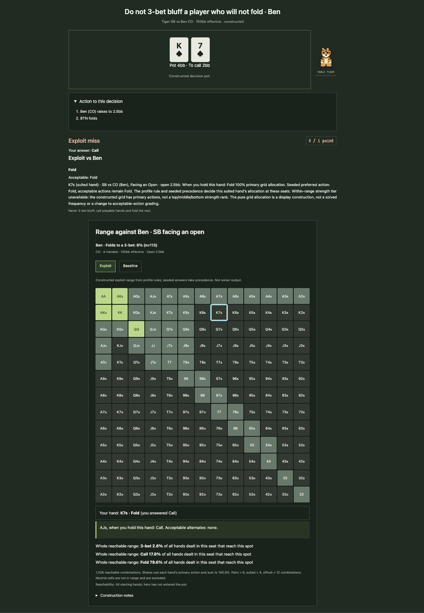

Tiger's GTO Trainer · Building with AI (Fall 2026)
Product Showcase (Prototype / Live App / 2-Min Video)
Current Status: Build 1: local prototype in this repo (app code under app/). A live build also runs at
tiger-gto-trainer.jl9717.chatgpt.site.
Demo:

Living PRD (Product Requirements Document)
Updated every week as we test with real users and learn what works.
1. Target User & The Job to Be Done
Who is this for? A regular in a recurring home game (the builder is the first user) who plays against the same opponents every week and wants to prepare for those specific players, not for a theoretical optimal opponent.
The painful "Before" workflow: Study means reviewing generic preflop charts and solver ranges that assume opponents play near-optimally. Against home-game regulars who 3-bet 25% of the time, or fold to a 3-bet over 90% of the time, the generic answer is often the losing answer. Reads on each opponent live in scattered hand histories and memory, and never turn into structured practice.
The "After" workflow with this product: The trainer holds a profile per villain, built from tracked hands with frequencies and sample sizes. In one sitting the user picks a villain, drills spots in the exact situations that villain creates, gets graded feedback tied to the underlying stat, and reviews mistakes by category. Study time goes directly at the players they will face this week.
2. Scope & Explicit Non-Goals
- In Scope (Core Workflow): Select a villain profile, drill villain spots generated from that player's tracked data, receive graded exploit feedback with the stat behind it (frequency and n), and review mistakes.
- Out of Scope #1: Not a solver. No real-time solving or GTO computation; all ranges are precomputed reference data.
- Out of Scope #2: No real-money play, no online-site integration, and no live in-game assistance of any kind.
- Out of Scope #3: No accounts or cloud sync in this build. Progress is stored locally in the browser with export/import.
3. How It Works Under the Hood & Riskiest Assumption (Week 2+)
Riskiest Assumption: Villain profiles are only as good as the tracked hand data behind them. Small samples mislead, so every stat in the app is displayed with its sample size, and profiles must keep being fed new hands to stay accurate.
Simple Architecture: [User picks a villain and mode] → [Static web app (HTML/CSS/JS, no server)] → [Bundled JSON data: preflop charts, villain spots, learn cards] → [Graded drill feedback; progress saved in browser localStorage]
4. Unit Economics & Analytics Snapshot (Updated Weekly)
- Cumulative Build Spend: $0 in new spend. Hosting is static (GitHub Pages); AI build tools are existing subscriptions.
- Est. Cost Per User Run: $0. The app is fully static with no runtime inference or API calls.
- User Evidence (Analytics from Build 2): Not yet measured. PostHog arrives in Build 2.
- Sponsor Call (Week 6): TBD
Weekly Build Log
Build on at least two separate days each week outside class, including the November 3 break. All build deadlines are noon, New York time.
Build 1 · Intent.md & Throwaway Prototype (Due Nov 9)
- What shipped: The existing trainer (v13 static build) imported into this repo under
app/, including source files, test scripts, and the built dist/; PRD v1 on this page; screenshot of the running app above. The trainer predates the course; the course work is the repo integration, the PRD, and the weekly builds from here.
- Things learned with AI: Terminal basics, learned while shipping this build: navigating with cd and ls, copying files with cp (quoting paths that contain spaces), and the core git loop of status, add, commit, and push. Also learned to read the output instead of trusting a success message: my first commit silently skipped the built app because of a .gitignore rule, which only showed up in the commit's file list.
- What broke / changed in PRD: The first push silently omitted the entire built app because the repo template's .gitignore ignores
dist/ folders. Caught by reading the commit's file list (16 text files, no app code); fixed with a force-add in a second commit the same day. PRD change: the headline workflow narrowed from general GTO drilling (the app has 10 modes) to villain-specific spot training.
- Cost & time this week: $0.00 · 2 hours
Build 2 · Smallest Local Version & PostHog (Due Nov 16)
- What shipped: [Local working slice, PostHog verified on this page and the local app, PRD v2, and local setup in AGENTS.md]
- What broke / changed in PRD: [Fill in]
- Cost & time this week: $[0.00] · [0] hours
Build 3 · Build.exe: The Core Workflow (Due Nov 23)
- What shipped: [End-to-end workflow working with real inputs + PostHog funnel events]
- What broke / changed in PRD: [Fill in]
- Cost & time this week: $[0.00] · [0] hours
Build 4 · Test.py: Choose Track A or Track B (Due Nov 30)
- Chosen track: [A: 10-case domain eval and one outside target-user review; OR B: 3–5 outside users and replay findings]
- Results and improvements: [Before/after evidence; for Track B, fixes to the top three friction points]
- PRD v4 changes: [What the evidence changed]
- Cost & time this week: $[0.00] · [0] hours
Build 5 · Ship.installer: Launch Ops, Rollback Check & 2-Min Video (Due Dec 7)
- Launch Ops & Safety: [Verified no exposed keys, set spend cap, tested 2-minute rollback]
- 2-Minute Video & Final Polish: [Link/embed above]
- Cost & time this week: $[0.00] · [0] hours